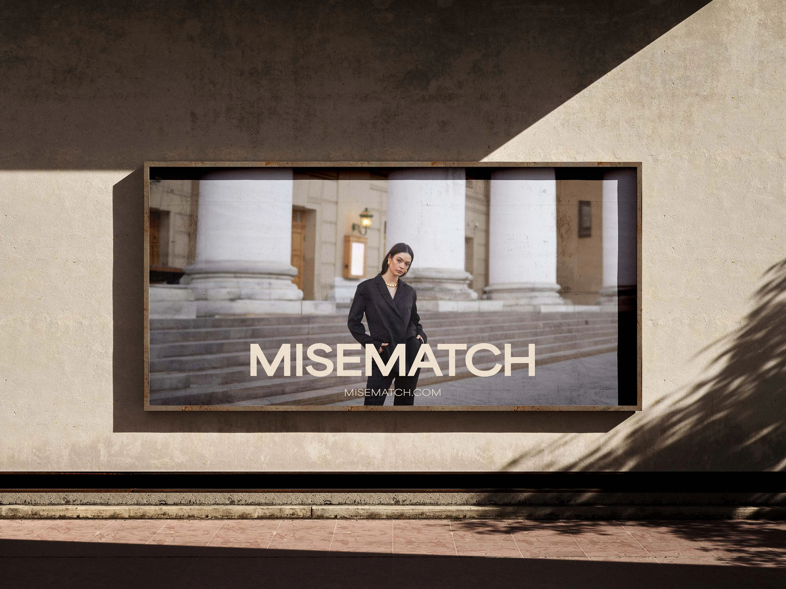
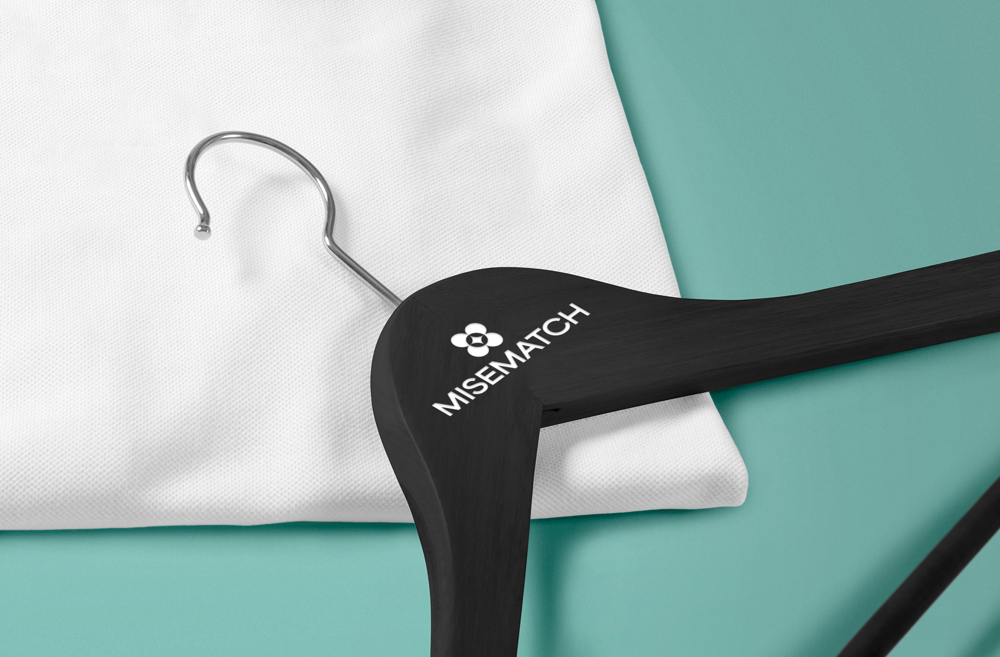
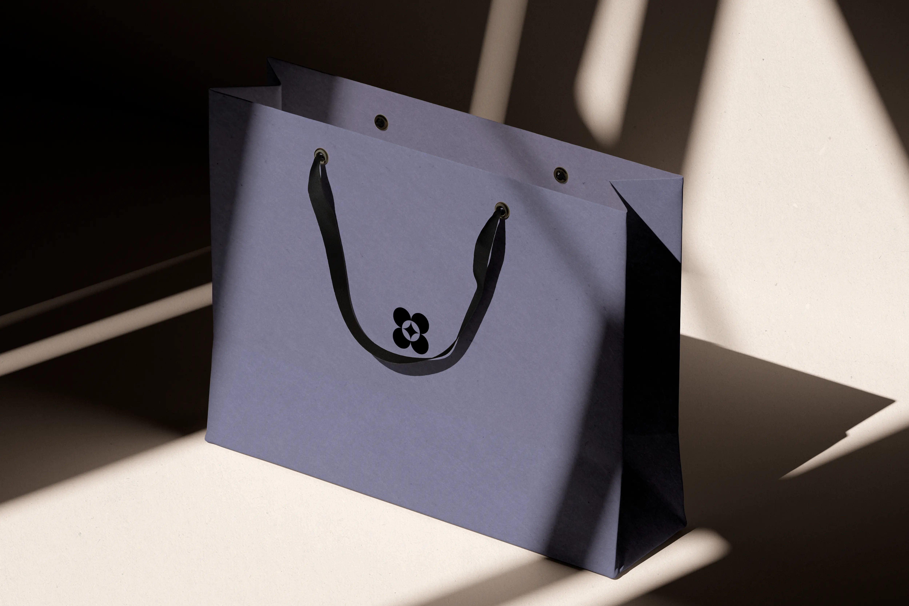
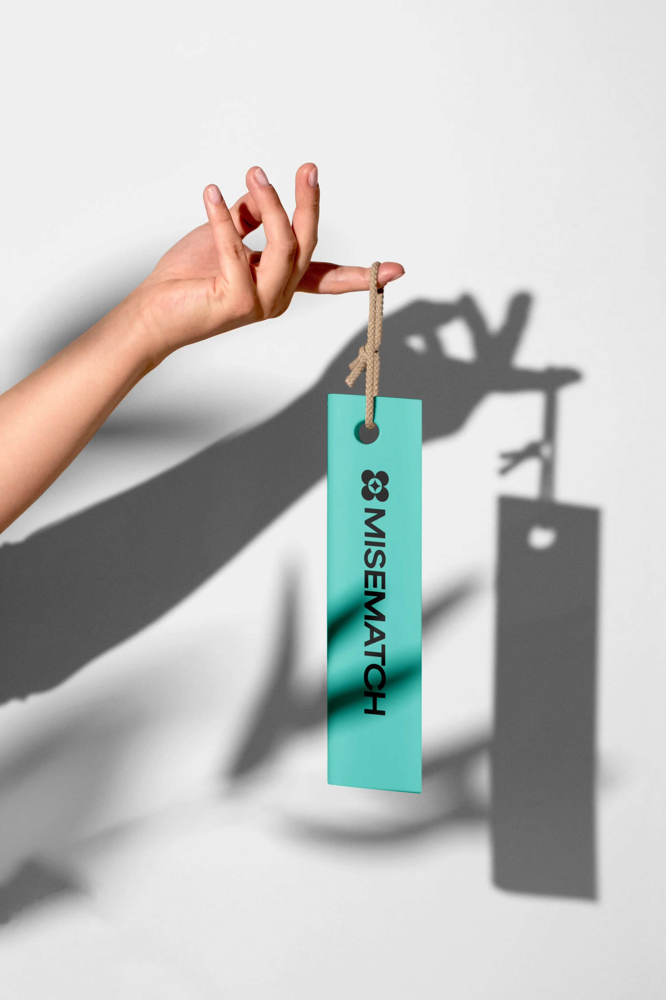

Misematch is a fashion company based in Padua, currently managing three brands with the potential to grow over time. I developed its visual identity from the ground up, creating a system capable of embracing multiple styles while remaining cohesive and adaptable to different needs. The brand reflects the key concepts of synergy and unity, expressing the connection between diverse aesthetics within a single, versatile identity.



